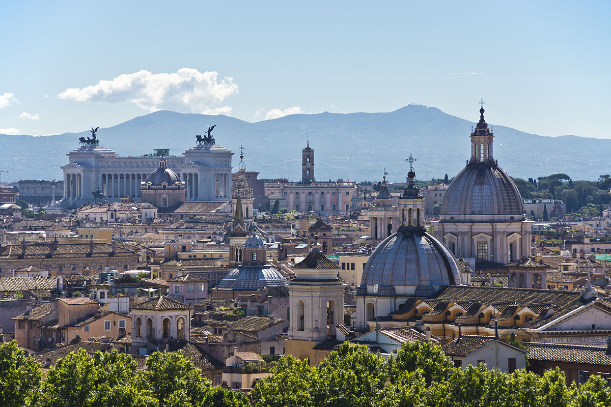
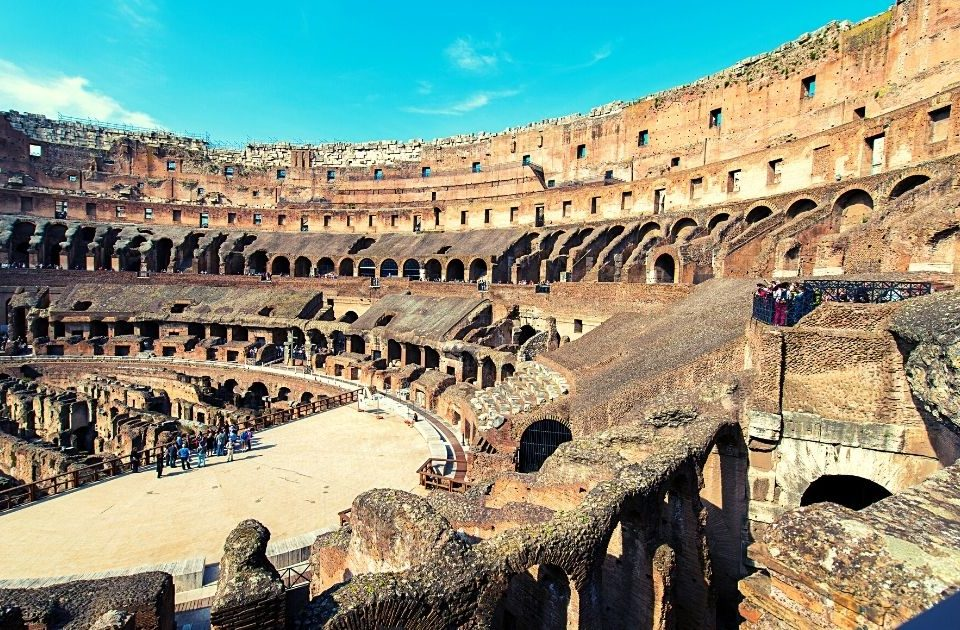
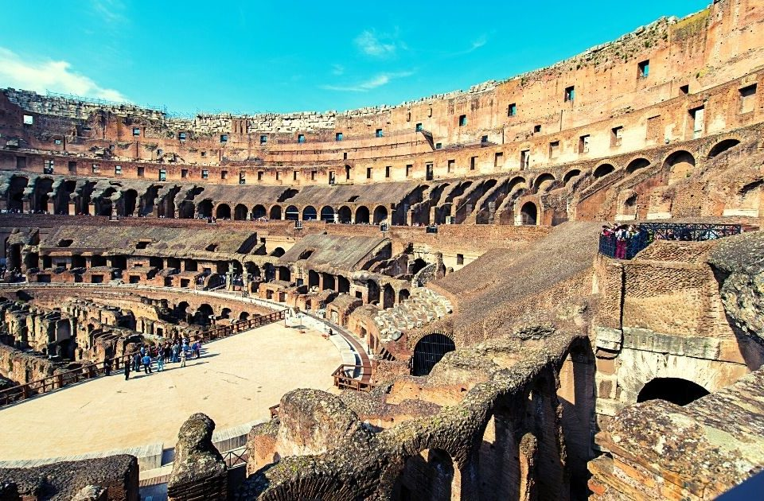
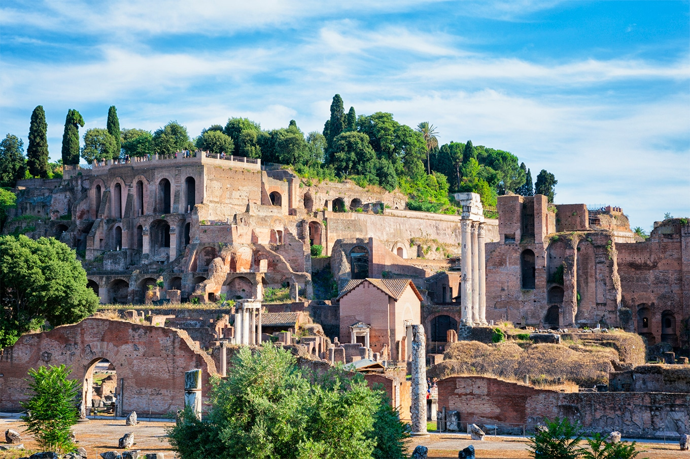
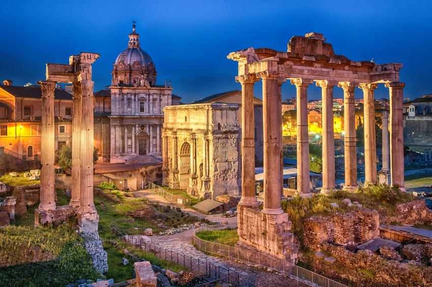
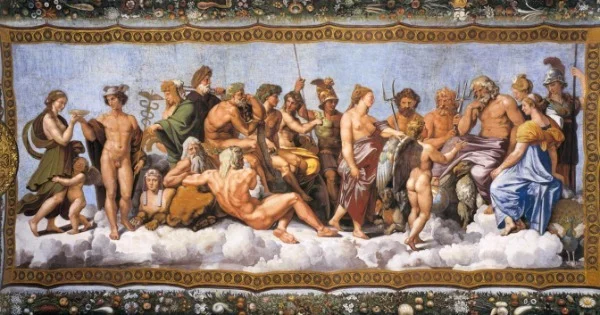

Pontos turísticos de Roma
A capital italiana é o destino dos sonhos de muitos viajantes. A cidade é famosa pelos diversos pontos turísticos de Roma, como as praças, ruínas e monumentos. Conhecida também como “A Cidade Eterna” sua história abrange mais de 2500 anos, sendo considerada uma das cidades mais antigas da Europa. Enquanto ao nome dado pelos romanos, eles estavam certos! A cidade de Roma continua lá independente das guerras, invasões e queda do império. A capital da Itália é uma das 20 cidades mais visitadas do mundo, e não é por acaso. Roma consegue unir história, romance e magia em um lugar só. Veja a localização de Roma aqui. :)
Coliseu de Roma
 

Principal ponto turístico e cartão postal de Roma, o Coliseu é um dos monumentos mais famosos do mundo e o mais visitado por turistas. Quando falamos que Roma respira história não é por acaso. O maior anfiteatro já construído teve suas obras iniciadas em 72 d.C., e serviu de palco para o combate de gladiadores por décadas.
Veja aqui a história do Coliseu de Roma. :)
Palatino
 Aproveite a visita ao Coliseu e vá visitar o Palatino. Além de estarem um do lado do outro, é possível acessar o Palatino com o mesmo ingresso do anfiteatro. O Monte Palatino é a mais central das sete colinas de Roma, que tem participação na sua fundação. É alí que a cidade de Rômulo teria começado a ser edificada.
Veja aqui a história do Palatino de Roma. :)
Arco do Constantino


Os arcos triunfais eram construídos para celebrar um triunfo. O Arco de Constantino é um monumento construído em homenagem a vitória do imperador Constantino I sobre Maxêncio na Batalha da Ponte Mílvia no ano 312. A construção do Constantino é diferenciada.
Veja aqui a história do Arco do Constantino. :)
Existem diversos outros pontos turísticos em Roma...
Veja abaixo algumas curiosidades da cidade de Roma:
- Foi fundada em 21 de abril de 753 a.C.
- Tem uma população de 2,873 milhões pessoas (2017).
- Tem uma área de 1.285 km².
- Tem uma elevação de 21m.
Conheça alguns dos deuses romanos:
- Júpiter - Pai dos deuses e dos homens, principal deus do Olimpo;
- Saturno - Deus do tempo, pai de Zeus. Pertencia à raça dos titãs;
- Juno - Rainha dos deuses, esposa de Zeus
- Vulcano - Artista do Olimpo, fazia os raios que Zeus lançava sobre os mortais. Filho de Zeus e Hera;
- Netuno - Senhor do oceano, irmão de Zeus;
- Plutão - Senhor do reino dos mortos, irmão de Zeus;
- Marte - Deus da guerra, filho de Zeus e Hera;
- Febo - Deus do sol, da arte de atirar com o arco, da música e da profecia. Filho de Zeus e Latona;
- Diana - Deusa da caça e da lua, irmã de Apolo;
- Vênus - Deus da beleza e do amor, nasceu das espumas do mar;
- Cupido - Deus do amor, filho de Vênus;
- Minerva - Deusa da sabedoria, nasceu da cabeça de Zeus;
- Mercúrio - Deus da destreza e da habilidade, cultuado pelos comerciantes. Filho e mensageiro de Zeus;
- Ceres - Deusa da agricultura, filha de Cronos e Ops. 